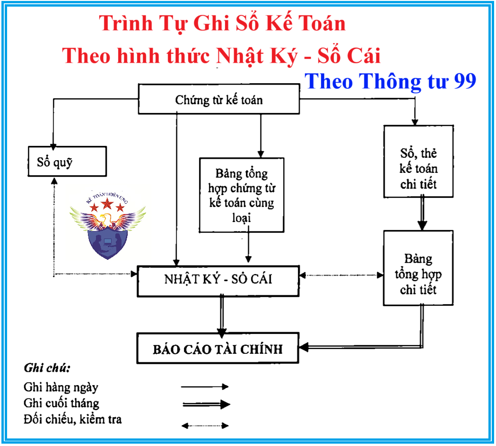

Trình tự ghi sổ kế toán theo hình thức kế toán Nhật ký - Sổ Cái theo hướng dẫn tại Thông tư 99/2025/TT-BTC chế độ kế toán doanh nghiệp có hiệu lực thi hành kể từ ngày 01/01/2026
1. Đặc trưng cơ bản của hình thức kế toán Nhật ký - Sổ Cái:
Các nghiệp vụ kinh tế, tài chính phát sinh được kết hợp ghi chép theo trình tự thời gian và theo nội dung kinh tế (theo tài khoản kế toán) trên cùng một quyển sổ kế toán tổng hợp duy nhất là sổ Nhật ký - Sổ Cái. Căn cứ để ghi vào sổ Nhật ký - Sổ Cái là các chứng từ kế toán hoặc Bảng tổng hợp chứng từ kế toán cùng loại. Hình thức kế toán Nhật ký - Sổ Cái gồm có các loại sổ kế toán sau:
- Nhật ký - Sổ Cái;
- Các Sổ, Thẻ kế toán chi tiết.
2. Trình tự ghi sổ kế toán theo hình thức kế toán Nhật ký - Sổ Cái

- Hàng ngày, căn cứ vào các chứng từ kế toán hoặc Bảng tổng hợp chứng từ kế toán cùng loại đã được kiểm tra và được dùng làm căn cứ ghi sổ, trước hết xác định tài khoản ghi Nợ, tài khoản ghi Có để ghi vào sổ Nhật ký - Sổ Cái. Số liệu của mỗi chứng từ (hoặc Bảng tổng hợp chứng từ kế toán cùng loại) được ghi trên một dòng ở cả 2 phần Nhật ký và phần Sổ Cái. Bảng tổng hợp chứng từ kế toán được lập cho những chứng từ cùng loại (Phiếu thu, phiếu chi, phiếu xuất, phiếu nhập,...) phát sinh nhiều lần trong một ngày hoặc định kỳ 1 đến 3 ngày. Chứng từ kế toán và Bảng tổng hợp chứng từ kế toán cùng loại sau khi đã ghi sổ Nhật ký - Sổ Cái, được dùng để ghi vào sổ, Thẻ kế toán chi tiết có liên quan.
- Cuối tháng, sau khi đã phản ánh toàn bộ chứng từ kế toán phát sinh trong tháng vào Sổ Nhật ký - Sổ Cái và các sổ, thẻ kế toán chi tiết, kế toán tiến hành cộng số liệu của cột số phát sinh ở phần Nhật ký và các cột Nợ, cột Có của từng tài khoản ở phần Sổ Cái để ghi vào dòng cộng phát sinh cuối tháng. Căn cứ vào số phát sinh các tháng trước và số phát sinh tháng này tính ra số phát sinh lũy kế từ đầu quý đến cuối tháng này. Căn cứ vào số dư đầu tháng (đầu quý) và số phát sinh trong tháng kế toán tính ra số dư cuối tháng (cuối quý) của từng tài khoản trên Nhật ký - Sổ Cái.
- Khi kiểm tra, đối chiếu số cộng cuối tháng (cuối quý) trong Sổ Nhật ký - Sổ Cái phải đảm bảo các yêu cầu sau:
Tổng số dư Nợ các Tài khoản = Tổng số dư Có các tài khoản
- Các sổ, thẻ kế toán chi tiết cũng phải được khoá sổ để cộng số phát sinh Nợ, số
| Tổng số tiền của cột “Phát sinh” ở phần Nhật ký | = | Tổng số phát sinh Nợ của tất cả các TK | = | Tổng số phát sinh Có của tất cả các TK |
Tổng số dư Nợ các Tài khoản = Tổng số dư Có các tài khoản
- Các sổ, thẻ kế toán chi tiết cũng phải được khoá sổ để cộng số phát sinh Nợ, số
- Các sổ, thẻ kế toán chi tiết cũng phải được khoá sổ để cộng số phát sinh Nợ, số phát sinh Có và tính ra số dư cuối tháng của từng đối tượng. Căn cứ vào số liệu khoá sổ của các đối tượng lập “Bảng tổng hợp chi tiết” cho từng tài khoản. Số liệu trên “Bảng tổng hợp chi tiết” được đối chiếu với số phát sinh Nợ, số phát sinh Có và số dư cuối tháng của từng tài khoản trên Sổ Nhật ký - Sổ Cái. Số liệu trên Nhật ký - Sổ Cái và trên “Bảng tổng hợp chi tiết” sau khi khóa sổ được kiểm tra, đối chiếu nếu khớp, đúng sẽ được sử dụng để lập báo cáo tài chính.
Các loại sổ sách
|
||
| Số TT | Tên sổ | Ký hiệu |
| 1 | Sổ quỹ tiền mặt | S07-DN |
| 2 | Sổ kế toán chi tiết quỹ tiền mặt | S07a-DN |
| 3 | Sổ tiền gửi không kỳ hạn | S08-DN |
| 4 | Sổ chi tiết vật liệu, dụng cụ (sản phẩm, hàng hóa) | S10-DN |
| 5 | Bảng tổng hợp chi tiết vật liệu, dụng cụ, sản phẩm, hàng hóa | S11-DN |
| 6 | Thẻ kho (Sổ kho) | S12-DN |
| 7 | Sổ tài sản cố định | S21-DN |
| 8 | Sổ theo dõi TSCĐ và công cụ, dụng cụ tại nơi sử dụng | S22-DN |
| 9 | Thẻ Tài sản cố định | S23-DN |
| 10 | Sổ chi tiết thanh toán với người mua (người bán) | S31-DN |
| 11 | Sổ chi tiết thanh toán với người mua (người bán) bằng ngoại tệ | S32-DN |
| 12 | Sổ theo dõi thanh toán bằng ngoại tệ | S33-DN |
| 13 | Sổ chi tiết tiền vay | S34-DN |
| 14 | Sổ chi tiết bán hàng | S35-DN |
| 15 | Sổ chi phí sản xuất, kinh doanh | S36-DN |
| 16 | Thẻ tính giá thành sản phẩm, dịch vụ | S37-DN |
| 17 | Sổ chi tiết các tài khoản | S38-DN |
| 18 | Sổ kế toán chi tiết theo dõi các khoản đầu tư vào công ty liên doanh | S41a-DN |
| 19 | Sổ theo dõi phân bổ các khoản chênh lệch phát sinh khi mua khoản đầu tư vào công ty liên doanh | S42a-DN |
| 20 | Sổ kế toán chi tiết theo dõi các khoản đầu tư vào công ty liên kết | S41b-DN |
| 21 | Sổ theo dõi phân bổ các khoản chênh lệch phát sinh khi mua khoản đầu tư vào công ty liên kết | S42b-DN |
| 22 | Sổ chi tiết phát hành cổ phiếu | S43-DN |
| 23 | Sổ chi tiết cổ phiếu mua lại của chính mình | S44-DN |
| 24 | Sổ chi tiết đầu tư chứng khoán | S45-DN |
| 25 | Sổ theo dõi chi tiết vốn đầu tư của chủ sở hữu | S51-DN |
| 26 | Sổ chi phí đầu tư xây dựng | S52-DN |
| 27 | Sổ theo dõi thuế GTGT | S61-DN |
| 28 | Sổ chi tiết thuế GTGT được hoàn lại | S62-DN |
| 29 | Sổ chi tiết thuế GTGT được miễn giảm | S63-DN |
| Các sổ chi tiết khác theo yêu cầu quản lý của doanh nghiệp | ||
3. Nội dung, kết cấu và phương pháp ghi sổ theo hình thức Nhật ký - Sổ Cái:
Sổ kế toán tổng hợp của hình thức kế toán Nhật ký - Sổ Cái chỉ có một quyển sổ duy nhất là sổ Nhật ký - Sổ Cái (Mẫu số S01-DN)
a) Nội dung:
- Nhật ký - Sổ Cái là sổ kế toán tổng hợp duy nhất dùng để phản ánh tất cả các nghiệp vụ kinh tế phát sinh theo trình tự thời gian và hệ thống hoá theo nội dung kinh tế (Theo tài khoản kế toán).
- Số liệu ghi trên Nhật ký - Sổ Cái dùng để lập Báo cáo tài chính.
b) Kết cấu và phương pháp ghi sổ:
+ Kết cấu:
Nhật ký - Sổ Cái là sổ kế toán tổng hợp gồm 2 phần: Phần Nhật ký và phần Sổ Cái.
Phần Nhật ký: gồm các cột: Cột "Ngày, tháng ghi sổ", cột “Số hiệu”, cột “Ngày, tháng” của chứng từ, cột “Diễn giải” nội dung nghiệp vụ và cột "Số tiền phát sinh". Phần Nhật ký dùng để phản ánh các nghiệp vụ kinh tế phát sinh theo trình tự thời gian.
Phần Sổ Cái: Có nhiều cột, mỗi tài khoản ghi 2 cột: cột Nợ, cột Có. Số lượng cột nhiều hay ít phụ thuộc vào số lượng các tài khoản sử dụng ở đơn vị kế toán. Phần Sổ Cái dùng để phản ánh các nghiệp vụ kinh tế phát sinh theo nội dung kinh tế (Theo tài khoản kế toán).
+ Phương pháp ghi sổ:
- Ghi chép hàng ngày:
Hàng ngày, mỗi khi nhận được chứng từ kế toán, người giữ Nhật ký - Sổ Cái phải kiểm tra tính chất pháp lý của chứng từ. Căn cứ vào nội dung nghiệp vụ ghi trên chứng từ để xác định tài khoản ghi Nợ, tài khoản ghi Có. Đối với các chứng từ kế toán cùng loại, kế toán lập “Bảng tổng hợp chứng từ kế toán cùng loại”. Sau đó ghi các nội dung cần thiết của chứng từ kế toán hoặc “Bảng tổng hợp chứng từ kế toán cùng loại” vào Nhật ký - Sổ Cái.
Mỗi chứng từ kế toán hoặc “Bảng tổng hợp chứng từ kế toán cùng loại” được ghi vào Nhật ký - Sổ Cái trên một dòng, đồng thời cả ở 2 phần: Phần Nhật ký và phần Sổ Cái. Trước hết ghi vào phần Nhật ký ở các cột: Cột "Ngày, tháng ghi sổ", cột "Số hiệu" và cột "Ngày, tháng” của chứng từ, cột "Diễn giải" nội dung nghiệp vụ kinh tế phát sinh và căn cứ vào số tiền ghi trên chứng từ để ghi vào cột “số tiền phát sinh”. Sau đó ghi số tiền của nghiệp vụ kinh tế phát sinh vào cột ghi Nợ, cột ghi Có của các tài khoản liên quan trong phần Sổ Cái, cụ thể:
- Cột F, G: Ghi số hiệu tài khoản đối ứng của nghiệp vụ kinh tế;
- Cột H: Ghi số thứ tự dòng của nghiệp vụ trong Nhật ký - Sổ Cái;
- Từ cột 2 trở đi: Ghi số tiền phát sinh của mỗi tài khoản theo quan hệ đối ứng đã được định khoản ở các cột F,G.
Cuối tháng phải cộng số tiền phát sinh ở phần nhật ký và số phát sinh nợ, số phát sinh có, tính ra số dư và cộng lũy kế số phát sinh từ đầu quý của từng tài khoản để làm căn cứ lập Báo cáo tài chính.